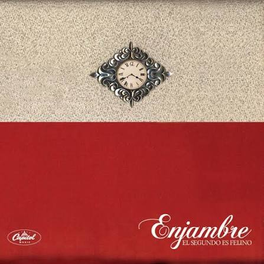

Crime And Punishment
★ ★ ★ ★ ★
A música é uma das manifestações artísticas e culturais mais profundas de um povo, refletindo de forma genuína a identidade, os valores e a alma de uma determinada época ou região geográfica.
Mais do que uma simples forma de entretenimento, ela atua como um poderoso veículo universal utilizado pela humanidade para expressar, canalizar e eternizar os sentimentos mais complexos da experiência humana, transcendendo barreiras linguísticas e temporais. Em sua definição técnica e estrutural, a música é a combinação perfeita entre o ritmo (a marcação do tempo), a harmonia (a sobreposição de sons simultâneos) e a melodia (a sequência sucessiva de notas), organizados de maneira logicamente agradável e fluida ao ouvido humano.
Num sentido mais amplo e conceitual, podemos compreendê-la como a organização temporal intencional de sons e silêncios — uma vez que as pausas são tão fundamentais para a estrutura musical quanto as próprias notas. Já em um sentido mais restrito e estético, trata-se da arte refinada de coordenar, manipular e transmitir efeitos sonoros que sejam harmoniosos, coerentes e artisticamente válidos.
Essa linguagem invisível, capaz de alterar estados de espírito e evocar memórias profundas, ganha vida e se materializa no mundo físico através da versatilidade da voz humana ou por meio do uso técnico de instrumentos musicais.
★ ★ ★ ★ ★

★ ★ ★ ★ ☆
★ ★ ★ ★ ★

★ ★ ★ ★ ☆
★ ★ ★ ★ ★
★ ★ ★ ★ ★